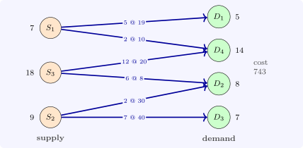

7.3 The MODI method
The simplex method needs the reduced costs of the non-basic cells. By duality they come from numbers \(u_i\) for the rows and \(v_j\) for the columns, the dual variables of the supply and demand constraints: solve \(u_i + v_j = c_{ij}\) on the \(m + n - 1\) basic cells (with one of them, say \(u_1\), set to \(0\), because of the redundant constraint), and compute \[ d_{ij} = c_{ij} - u_i - v_j \] for the others. If all \(d_{ij} \geq 0\) the solution is optimal. Otherwise the cell with the most negative \(d_{ij}\) enters: adding it to the basic tree creates exactly one cycle, along which the shipments are alternately increased and decreased by \(\theta \); the largest \(\theta \) is the smallest amount on a decreasing cell, which leaves the basis. This is the modified distribution (MODI, or \(u\)–\(v\)) method, the simplex method in the language of the table, with the cycle (the stepping-stone path) playing the role of the ratio test.
For the VAM solution of Example 7.1.2 the cell \((S_2, D_2)\) has \(d_{22} = -18\); its cycle allows \(\theta = 2\), and the cost falls by \(2 \times 18 = 36\) to \(743\). At that plan the multipliers are \(u = (0, 32, 10)\) and \(v = (19, -2, 8, 10)\), and every \(d_{ij}\) is non-negative (Software 7.6.2), so it is optimal. Degeneracy, a BFS with fewer than \(m + n - 1\) positive cells, is handled by treating some zero cells as basic, often marked with a small \(\varepsilon \), so that the tree is complete and the \(u\), \(v\) can be found.

Questions on this section
Stuck on something here? Ask below and it stays attached to this topic.